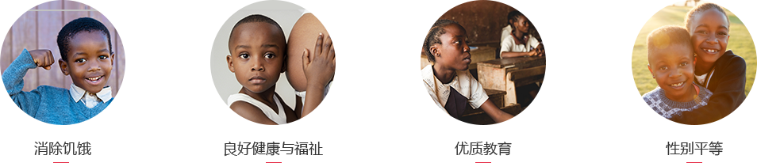

非洲热土，土地广袤，神奇而美丽；人民善良淳朴，孩子天真无邪，但贫困和艾滋病成为威胁青少年儿童生命健康的两大“杀手”，这一问题已引发全世界的关注，联合国呼吁国际上更多的组织与个人积极行动起来，实施有效的帮助，组织并减少贫困与艾滋病对青少年儿童造成的伤害。
2013年，习近平主席提出“一带一路”倡议，旨在构筑“人类命运共同体”，造福包括非洲在内的广大发展中国家人民；中非友谊渊远留长，中国梦与非洲梦紧紧相连，2015年12月中非合作论坛，习近平主席再次宣示，
中国将始终同非洲国家心连心、共命运，永远做非洲的好朋友、好伙伴、好兄弟。今天的非洲，期待中国的兄弟姐妹相助。面对受贫困和艾滋折磨的非洲儿童，让我们行动起来，让愿景变为行动，用创新改变命运。
2015年9月，世界各国领导人在纽约联合国峰会上通过2030年可持续发展议程，该议程涵盖经济发展、社会发展和环境可持续三大领域17项可持续发展目标 (Sustainable Development Goals, SDGs) 及169项具体目标。2016年9月，《中国落实2030年可持续发展议程国别方案》在纽约联合国总部发布。
17个可持续发展目标为我们规划了美好愿景和努力方向。本次比赛积极相应“联合国可持续发展目标”(Sustainable Development Goals,简称SDGs),重点关注第2至6项等内容，即“消除饥饿”、“良好健康与福祉”、“优质教育”、“性别平等”、“清洁饮水和卫生设施”。鼓励青少年发挥创意，以创新思维提出现实解决方案，为改善非洲受贫困和疾病影响的妇女儿童的医疗、营养、公共卫生、教育条件贡献力量。